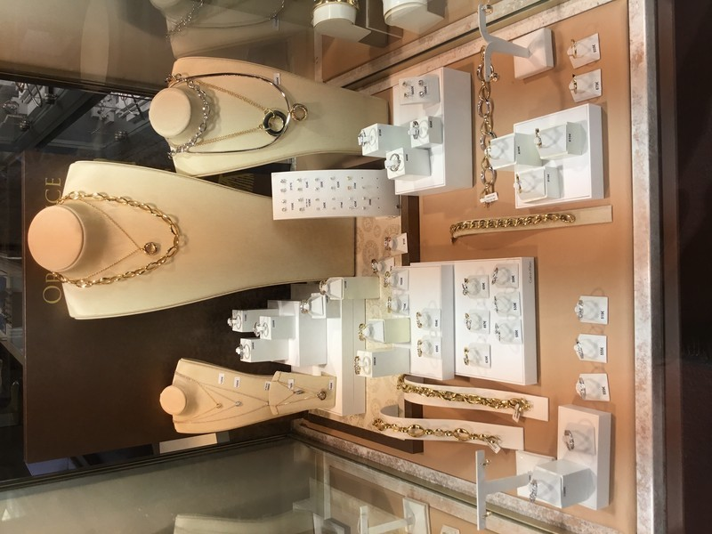

Bijoux & pierres précieuses
L'or, l'argent, l'éclat du diamant et la couleur des pierres. Des pièces à offrir, à porter et à transmettre.
Trouver votre bijou
Votre bijoutier et horloger à Alès.
Une histoire de famille depuis 1948.
Un bijou, une montre, un souvenir.
Des pièces choisies pour ce qu'elles font ressentir.
Depuis sa création par Alexandre Petit en 1948, notre maison familiale cultive à Alès la passion des bijoux, des pierres précieuses et de l'horlogerie.
De Michel à Cyril Petit, le savoir-faire se transmet de père en fils. Au 18 rue Saint-Vincent, nous vous accueillons pour choisir une montre, imaginer un bijou ou prendre soin d'une pièce qui vous est chère.
Rencontrons-nousDes lignes intemporelles aux pièces de caractère,
laissez-vous guider par ce qui vous ressemble.
L'or, l'argent, l'éclat du diamant et la couleur des pierres. Des pièces à offrir, à porter et à transmettre.
Trouver votre bijouUne montre se choisit autant avec le regard qu'avec le cœur. Découvrez l'univers horloger de notre maison.
Choisir votre montreUn atelier de création, une connaissance des pierres et un service de réparation pour accompagner la vie de vos bijoux et de vos montres.
Notre atelier donne forme à vos envies. La maison propose de fabriquer un bijou selon vos désirs : prenons le temps d'en discuter ensemble.
Diamants, rubis, saphirs ou émeraudes : la gemmologie fait partie de l'histoire de Michel et Cyril Petit. La maison vous accompagne dans la découverte de ces pierres et de leur singularité.
La maison propose un service de réparation pour les montres et les bijoux toutes marques. Apportez votre pièce en boutique afin d'échanger sur sa prise en charge.

La rencontre commence au cœur de la ville, au 18 rue Saint-Vincent. Poussez la porte et prenons le temps de choisir ensemble.
18 rue Saint-VincentLa Bijouterie Petit se trouve au 18 rue Saint-Vincent, 30100 Alès. Vous pouvez joindre la boutique au 04 66 52 10 00.
Oui. La maison dispose d'un atelier de création et propose de fabriquer un bijou selon vos désirs. Un échange en boutique permet de préciser votre projet.
Un service de réparation de montres et de bijoux toutes marques est proposé. Contactez la boutique ou présentez votre pièce pour connaître les possibilités de prise en charge.
Appelez le 04 66 52 10 00 pour convenir d'une visite autour de votre projet. Le formulaire ci-dessous est présenté dans cette ébauche et sera connecté au service de rendez-vous.